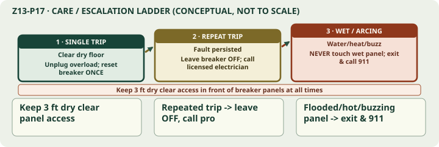

Z13-P17 · Home survival and utilities · New manuscript
Recognize electrical panel danger signs and licensed-electrician stop boundaries
Distinguish safe routine breaker resets from dangerous electrical-panel faults that require immediate utility or licensed-electrician intervention.
When it applies · Residential breaker panels experiencing repeated trips, storm lightning strikes, or basement water intrusion.
Equipment · Dry non-conductive footwear, flashlight, clear access around panel, and licensed electrician contact.

Actions
- Keep at least 3 feet of dry, unobstructed clearance in front of the main electrical panel at all times, and NEVER touch a breaker box while standing on wet concrete, in basement floodwater, or with wet hands.[U01, U04, D05]
- If a single branch breaker trips once after overloading an outlet, unplug excess loads and reset it cleanly ONCE—if a breaker trips again immediately, smells burnt, feels hot, buzzes, crackles, or sparks, LEAVE IT OFF and call a licensed electrician.[U01, U04]
- Treat ANY floodwater that reached basement outlets, furnaces, or the main electrical panel as a severe electrocution hazard requiring the electric utility or licensed electrician to shut off and inspect before anyone enters.[D05, U01]
Failure recognition · Repeatedly forcing a humming, hot circuit breaker back ON or wading into ankle-deep flooded basement water to flip the main switch.[U04, D05]
Verify · Confirm panel area stays dry and clear, breaker labels are legible, and any repeating trip or water contact escalates to licensed pros.[U14, U04]
Stop or change course · Buzzing/crackling panels, burnt-fish/plastic odor, smoke, hot breakers, or standing water near wiring mandate immediate evacuation and calling 911/utility.[U04, D05]
Evidence and editorial notes
- D05 · FEMA / Ready.gov · Floods (current web edition)
- Section: Floods: During; Turn Around, Don’t Drown · Conditions: Flooded roads or trails, flood alert, or post-flood re-entry
Support: Move to safe higher ground when directed, never walk or drive into floodwater, and respect closures and re-entry restrictions.
Limitations: Depth examples are warning illustrations, never safe entry thresholds. Trapped or submerged vehicles require emergency help and scene-specific response. · Conflicting evidence: See A02 claim audit for boundaries.
Editorial note: Core flood evacuation, water-avoidance, and safe re-entry evidence. · Specialist reviewer: Emergency management and flood hydrology
Primary source · checked 2026-11-24 - U01 · FEMA / Ready.gov · Power Outages (current web edition)
- Section: Power Outages > Preparing and Responding Safely · Conditions: Residential utility electrical outages of hours to days
Support: Keep phones/medical batteries charged, maintain flashlights instead of candles, unplug sensitive appliances to protect against restoration surges, and verify backup power plans for electrically dependent medical devices.
Limitations: Home outage durations vary widely by grid damage; extended winter outages require heat/evacuation contingencies. · Conflicting evidence: None; aligns with CPSC and NFPA.
Editorial note: Establishes household outage baseline and medical-power priority in Z13. · Specialist reviewer: Emergency management and electrical safety
Primary source · checked 2026-11-24 - U04 · FEMA / Ready.gov · Home Fires (current web edition)
- Section: Home Fires > Smoke Alarms, Fire Extinguishers, and Escape Plans · Conditions: Residential fire prevention during outages and supplemental heating
Support: Test smoke alarms monthly on every level and outside sleeping areas, keep two exits clear from every room, store fuels outside living spaces in approved containers, and evacuate immediately if a fire exceeds incipient containment.
Limitations: Candles and improvised indoor flames dramatically elevate outage house-fire deaths. · Conflicting evidence: None; integrates with CPSC CO-alarm rules (C09).
Editorial note: Anchors outage fire prevention, fuel storage, and exit readiness in Z13. · Specialist reviewer: Fire prevention and residential safety
Primary source · checked 2026-11-24
Current assessment · W2C-E014 (2026-11-25) · Open: source scope does not match the claim; escalated: Supported: smoke alarms on every level including the basement; batteries twice a year unless 10-year lithium; replace units every 10 years or per manufacturer; keep flammable liquids away from heat sources; refuel generators outdoors. Limits: Not on the page although U04 asserts them: monthly testing, alarms outside sleeping areas, two exits from every room, storing fuels outside in approved containers, extinguisher thresholds, and grease-fire guidance. - U14 · FEMA / Ready.gov · Make a Plan (current web edition)
- Section: Household Emergency Planning, Utility Maps, and Outage Checklists · Conditions: Pre-outage residential documentation and household drills
Support: Document main water, electrical panel, and gas shutoff locations, utility outage phone numbers, medical power registries, and neighborhood check-in networks on paper before storms hit.
Limitations: Utility medical-priority lists do not guarantee uninterrupted power during major ice storms or grid blackouts. · Conflicting evidence: None; bridges Z01 planning with Z13 household infrastructure.
Editorial note: Grounds household utility mapping and vulnerable-occupant contingencies. · Specialist reviewer: Emergency management and accessibility specialist
Primary source · checked 2026-11-24
Source lineage · FEMA Home Fires and Ready.gov Power Outages; new manuscript · Classification · New manuscript.